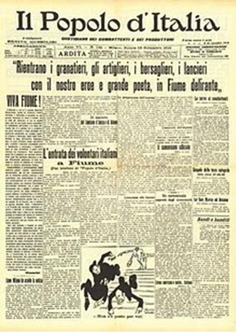

En ces temps de politique de santé autoritaire, certains chefs d’état se prennent pour des chefs de guerre et des « dictateurs d’opérettes » en culottes courtes. « Malheur à la ville dont le prince est un enfant » nous dit l’Ecclésiaste (10-16). Montherlant fit de cette citation le titre d’une de ses pièces majeures. Sans aucune concertation parlementaire ou populaire, le gouvernement de « l’état de droit » français nous confine à nos domiciles et nous impose des couvre-feux « sanitaires » qui ressemblent à du fascisme « soft. »Les décisions liberticides pour la population et ruineuses pour l’économie sont prises lors de « conseils de défense » ainsi, les participants ne peuvent être poursuivis, le sceau du « secret défense » s’applique à ces décisions.
Il me semble intéressant d’approcher un véritable dictateur fasciste, et nous verrons alors qu’il y a loin de la coupe aux lèvres. Tout en restant prudent, car l’enfer est pavé de bonnes intentions, Mussolini, avant de devenir l’un des hommes les plus noirs du vingtième siècle, fut tout d’abord un « gentil » trublion. Et comme tous les trublions, futurs dictateurs, il visait « l’homme nouveau ». Cet « homme nouveau », le « surhomme » ou le « jour d’après. » sont une constante de tous les dictateurs en herbe.
C’est un portrait compliqué, fouillé, documenté, intime et en vérité impossible que nous livre Pierre Milza, avec son Mussolini paru aux éditions Fayard en 1999. L’ouvrage est lourd, non pas en style, mais en poids : 1 kg 200 pour 985 pages !
Pas question donc de se le trimbaler à la plage ou dans les transports en commun ! On doit également à Pierre Milza une monumentale et volumineuse « Histoire de l’Italie » qui fait autorité. (éd. Fayard)
Ce portrait de l’un des hommes les plus importants du vingtième siècle s’avère impossible et l’explication en est donnée par l’auteur en quatrième de couverture. Si, en effet, on se contente des photos et des quelques films d’actualité d’époque montrant le Duce donnant des coups de menton, on n’aura qu’une caricature, certes vraie, mais limitée du personnage incompréhensible que fut Benito Mussolini.
Comment en effet expliquer de quelle façon un militant syndical qui connut la lutte, la prison, l’exil, la misère et la faim devint le défenseur et l’incarnation même d’un régime totalitaire qui pourchassait de manière extrêmement violente les militants syndicaux et ses anciens camarades du PSI dont il avait été le numéro deux ?
Fiché de bonne heure par la police, le dictateur développera une police fichant quasiment toute l’Italie !
Comment celui qui exaltait l’union libre se fit-il le défenseur de la famille patriarcale traditionnelle ?
Comment le bouffeur de curés farouchement anticlérical a-t-il pu signer les accords de Latran ?
Comment le militant anticolonial a-t-il pu laisser commettre, voire ordonner, des massacres sanglants en Éthiopie ? Ces massacres ont égalé en horreur ce que la barbarie nazie allait offrir quelques années plus tard à l’humanité.
« Pendant dix jours, l’aviation italienne arrosa de bombe incendiaires et d’ypérite les soldats du Négus. Les blessés qui se traînaient jusqu’aux eaux du lac pour y trouver un peu de fraicheur, ou pour boire, ne trouvaient plus devant eux qu’une masse liquide saturée de gaz moutarde et mouraient dans d’atroces souffrances. » p 673.
Enfin, comment le gauchiste inspiré par des penseurs tels que Marx, Proudhon et Nietzche a-t-il pu devenir un ultranationaliste à la solde du grand patronat ?
Si Mussolini assuma tous ses reniements, ses revirements, ses contradictions, cela ne nous dit pas qui il était réellement.
Violoniste amateur, lecteur boulimique, érudit ; il était issu de la petite bourgeoisie. Son père, militant socialiste, tenait un café et était en même temps forgeron à Dovia, en Émilie-Romagne ; sa mère était institutrice. Il passa son enfance dans sa région de naissance.
Instituteur puis journaliste furent les métiers du futur maître de l’Italie, mais il adorait toucher à tout. Tour à tour maçon ou paysan et pas seulement pour les besoins de la propagande, cet érudit était aussi un manuel et un sportif achevé (cavalier, aviateur, pilote de course, escrimeur etc.).
Le militant devint directeur du journal « L’Avanti ! », journal socialiste, puis du « Popolo d’Italia », journal financé par le patronat italien. L’Avanti qu’il laissa, à plusieurs reprises mettre à sac, toujours avec une violence démesurée, par ses troupes :
« L’assaut fut d’une extrême violence, les contre-manifestants (les fascistes) faisant usage non seulement de gourdins et de matraques, mais également de pistolets et de grenades, et dispersant en quelques minutes les socialistes désarmés sans que la police, qui avait mollement tenté de s’interposer entre les deux cortèges fît quoi que ce fut pour stopper les assaillants. Maîtres de la rue, les fascistes décidèrent de marcher sur le siège de l’Avanti ! et de prendre d’assaut l’immeuble abritant le quotidien socialiste. Ils bousculèrent le mince cordon de soldats qui était censé défendre la place, tuant au passage un jeune appelé de dix-huit ans, puis pénétrèrent dans les locaux du journal, ouvrant le feu sur les typographes, brisant systématiquement toutes les machines et mettant finalement le feu à l’immeuble. » p.241
Bien sûr devant les violences opérées par les chemises noires beaucoup d’italiens prirent le chemin de l’exil. Ces exilés trouvèrent parfois un accueil favorable, pas toujours, mais quand ils pouvaient servir les puissances rivales de l’Italie, ces dernières ne se gênaient pas pour utiliser ces réfugiés :
« L’assassinat de Matteotti ne fit que renforcer leur animosité envers le Duce, tandis que ce dernier considérait avec une nervosité croissante le soutien que les dirigeants du cartel apportaient aux exilés antifascistes, entrés massivement en France pour échapper à la terreur squadriste » p.416.
L’ennui, et de taille, c’est que P. Milza ne donne jamais de chiffre concernant ces réfugiés italiens. Même si à la page 716, l’auteur nous fait savoir que le comte Ciano, (ministre des affaires étrangères et gendre du Duce) par une circulaire portant son nom, escomptait faire rentrer de France le million d’italiens qui y avait émigré. Ils ne furent que quelques milliers à rentrer. Certes, le fascisme est la spécialité de l’historien et le chiffre des réfugiés du fascisme doit bien figurer dans l’un ou l’autre de ses écrits, mais il fait cruellement défaut dans cette biographie, si riche en histoire.
Le livre parcourt non seulement l’histoire contemporaine de l’Italie mais également celle de l’Europe et de l’Afrique. Les détails sont nombreux, les petits riens qui semblent insignifiants sont mis en valeur et l’importance parfois essentielle des moindres faits apparaît au grand jour sous la plume de l’auteur. L’influence des femmes qui formèrent véritablement l’esprit du dictateur, qui l’éveillèrent à la conscience politique est largement mise en évidence. Les femmes occupèrent une place importante dans la vie de Mussolini. C’est une intellectuelle ukrainienne, Angelica Balabanoff, qui la première initia le Duce à la culture. Ses expériences amoureuses commencèrent bien avant sa vie politique, elles furent nombreuses et mouvementées.
Historiquement, le fascisme est né de l’idée interventionniste de s’engager dans la guerre en se rangeant du côté des alliés pendant le premier conflit mondial. Le mouvement fasciste fut créé en 1919, les résultats ne se firent pas attendre :
« De 1921 à 1924 le revenu national par tête avait pratiquement doublé par rapport à la période quinquennale précédente ; les salaires réels avaient augmenté de 10 % et le nombre de chômeurs était tombé de 541 000 à 122 000. » p.385.
Le côté social qu’a développé le mouvement fasciste et l’adhésion populaire à la doctrine sont également mis en évidence, par contre, les grands travaux envisagés par le régime -dont certains furent menés à bien- se partagent la portion congrue avec la relation que le régime entretint à l'égard de les différentes mafias italiennes.
Le Duce avait un côté machiste très développé, mais pouvait-il en être autrement en Italie à cette époque ? Les formules viriles dont il fut l’auteur sont tout de même relevées et fines à la fois :
« Molti nemici, molto onore » (Beaucoup d’ennemis, beaucoup d’honneurs). Et il n’hésitait pas à utiliser ces formules viriles, même jeune et encore socialiste révolutionnaire, ainsi en 1911 devant ses juges :
« Si vous m’acquittez, déclara-t-il pour conclure sa plaidoirie, vous me faites plaisir. Si vous me condamnez, vous me faites honneur. »
« È meglio vivere un giorno da leone, che cent´anni da pecora. » (il vaut mieux vivre un jour comme un lion que cent ans comme un mouton), était une des devises des fascistes. Peut-être est-ce Mussolini qui l’utilisa le premier ou qui en est l’auteur. La violence que déployaient les fameux squadri était véritablement léonine :
« Le bilan des cinq semaines de campagne s’éleva officiellement à 105 morts et 431 blessés graves, auxquels s’ajoutèrent le jour du scrutin une quarantaine de tués et une centaine de blessés. » p.280 (Les élections de 1921.)
Bien entendu, comme tous les dictateurs, Mussolini avait besoin de certitude quant à la fidélité de son peuple, il s’agit d’être sûr d’avoir l’amour en retour dont les dictateurs ont besoin. Faire prêter serment à ses proches d’abord puis à ses lointains inconnus ensuite constitue une trace visible de cet amour attendu en retour du don de la personne au peuple, au pays, à la cause. En France, toute comparaison gardée envers le fascisme italien, ce fut aux instituteurs que le Maréchal Pétain demanda de prêter serment à sa personne, en Italie ce fut légèrement différent, mais la démarche est la même :
« La dernière manifestation de cette influence fut sans doute la suggestion, faite à Mussolini (par Gentile) et acceptée par celui-ci en 1931, d’exiger des professeurs d’université qu’ils prêtent serment de fidélité au roi et au régime fasciste. Sur les 1200 enseignants concernés, 13 seulement refusèrent de le faire et furent immédiatement mis à la retraite ou suspendus avec indemnités. » p.583.
Excellent ouvrage, complet, documenté et de plus bien écrit. L’auteur ne rentre pas dans un jeu explicatif du caractère ou de la personnalité du dictateur. Un travail d’historien assez neutre si le terme signifie quelque chose en histoire. On ne peut dire en fermant l’ouvrage « j’en sais davantage sur Mussolini, j’ai enfin compris la doctrine et le personnage » non ! Mais le lecteur a par contre exploré plusieurs pages d’histoire d’une période cruciale du vingtième siècle en prenant du plaisir à la lecture d’un des plus fins et des plus grands historiens de ce vingtième siècle. Les mille deux cents grammes de l’ouvrage vous muscleront le bras et le contenu vous musclera le cerveau, pourquoi différer pareil plaisir ?
Partager cette page